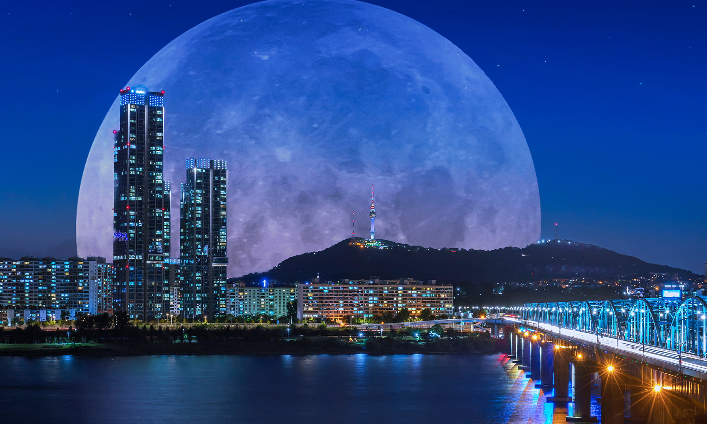

Where I come from
Discovering Seoul

A City of Old and New
Seoul is the capital of South Korea and one of the biggest cities in Asia. The city proper has a population of around 9.4 million, while the metro area has about half the nation’s population. The Han River runs through the middle of the city from east to west, splitting it into a northern half, where the historic center and royal palaces are, and a southern half, known for neighborhoods like Gangnam.
The best thing about Seoul for me is how easily the new and the old sit next to each other. You can walk through Gyeongbokgung, a palace first built in the 14th century during the Joseon dynasty, and ten minutes later be surrounded by glass office towers, neon signs and some of the fastest internet in the world. In Bukchon, traditional hanok houses share the same hillsides as modern apartment blocks and street food stalls selling tteokbokki and hotteok are right outside upscale department stores.
Seoul also has four very distinct seasons. Spring brings cherry blossoms along the river, summer is hot, humid and rainy during the monsoon, autumn turns the mountains red and gold, and winter is cold and dry with temperatures often below freezing. The chart below shows how much the average temperature changes over the year. Getting around is easy thanks to an extensive subway network, which makes it simple to explore every corner of the city.
Seoul's Seasons in Numbers
Average daily temperature by month (°C). Hover over a bar to see the exact value.
Source: Korea Meteorological Administration, climate normals 1991–2020.
Places I Recommend Visiting
- Gyeongbokgung Palace: the largest of Seoul's royal palaces, especially beautiful in autumn.
- Bukchon Hanok Village: a neighborhood of traditional Korean houses between two palaces.
- N Seoul Tower: the best view of the city, at the top of Namsan mountain.
- Han River parks: perfect for biking, picnics and night views of the bridges.
- Gwangjang Market: one of the oldest markets in Seoul, famous for its street food.
- Myeongdong: a busy shopping street full of cosmetics stores and food stalls.